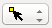
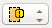

This page gives a short overview on how to move the camera, perform selections, or to transform parts of a mesh.
Camera Controls
The camera is moved by pressing a mouse-button and moving the mouse:
Rotate
- Left-Mouse-Button Drag: Rotate the camera around its current focus point.
Move
- Middle-Mouse-Button Drag: Move the camera in its current plane.
- Ctrl (Cmd) + Left-Mouse-Button Drag: Move the camera in its current plane.
- Ctrl (Cmd) + Shift + Left-Mouse-Button Drag: Move the camera and the focus-point into/out of the screen.
Zoom
- Mouse-Wheel Up/Down: Zoom in/out
- Shift + Left-Mouse-Button Drag: Zoom in/out
Focus
- Left-Mouse-Button Double-Click: Set the camera focus to the clicked position.
One should have a look at the Camera-Tools in the tool browser, too. They e.g. allow one to center the active mesh or the currently selected elements.
Selection Controls
Selections are performed using the Right-Mouse-Button. The Toolbar features several buttons which allow to customize the action that is performed when the right mouse-button is pressed.
The element type (vertex/edge/face/volume) on which selections are performed is determined through a click on 'select-vertices', 'select-edges', 'select-faces', or 'select-volumes' in the tool bar:
Click Selection

- Right-Mouse-Button Click: Only the clicked element is selected.
- Shift + Right-Mouse-Button Click: The selection-state of the clicked element is toggled (allows for multi-selection).
Box Cuts Selection

- Right-Mouse-Button Drag: All elements which cut the selection rectangle or lie inside the rectangle are selected exclusively.
- Shift + Right-Mouse-Button Drag: All elements which cut the selection rectangle or lie inside the rectangle are selected in addition to the current selection.
Box Contains Selection
- Right-Mouse-Button Drag: All elements which lie completely inside the selection rectangle are selected exclusively.
- Shift + Right-Mouse-Button Drag: All elements which lie completely inside the selection rectangle are selected in addition to the current selection.
General Mouse Selection Tools
Those shortcuts work for all selection modes (Click-, Box Cuts-, and Box-Contains-Selection)
- Ctrl (Cmd) + Right-Mouse-Button Click: All elements of the same type and subset as the clicked element are selected exclusively.
- Shift + Ctrl (Cmd) + Right-Mouse-Button Click: All elements of the same type and subset as the clicked element are selected in addition to the current selection.
Important Shortcuts
The following keyboard shortcuts are often useful when performing selections:
- 'a': Selects/deselects all elements. If no elements are selected, pressing 'a' will select all elements. If at least one element is selected, pressing 'a' will deselect all elements.
- 'c': Closes the current selection, i.e., recursively selects all sides of selected elements.
Geometry Transformation Controls
The currently selected elements can be moved or scaled through mouse-input. All transformations are triggered through a keyboard shortcut. After pressing such a key, moving the mouse will transform the geometry. Pressing the Left-Mouse-Button will finish the transformation. By pressing the Right-Mouse-Button (or 'ESC') instead, one cancels the transformation, thus moving everything back at where it was when the transform key was pressed.
After pressing a transform-key, one can choose the axis along which the transform shall take place by pressing 'x', 'y', or 'z'.
Move Geometry
- 'g': Grabs the current selection. Moving the mouse will move the selected geometry. By default it is moved in the camera-plane. Pressing 'x', 'y', and 'z' will restrict movement to the corresponding axis.
- 's': Scales the current selection. Moving the mouse will scale the selected geometry. By default it is scaled along all axis. Pressing 'x', 'y', and 'z' will restrict scaling to the corresponding axis.


 1.8.6
1.8.6